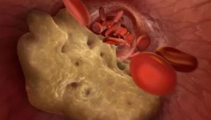

LA PRESSIONE, GLI ICTUS E GLI INFARTI POSSONO ESSERE UNA CONSEGUENZA DELL’ACCUMULO DI COLESTEROLO NEI VASI SANGUIGNI. I VASI SANGUIGNI “CONTAMINATI” SONO RESPONSABILI DI 9 SU 10 MALATTIE CRONICHE RITENUTE INCURABILI.
Emicrania, sbalzi di pressione, articolazioni doloranti, dolori alla schiena, gambe gonfie, viso gonfio al mattino, intorpidimento degli arti, abbassamento della vista, disturbi della memoria. Molti medici ritengono che tutti questi sintomi normalmente compaiano con l’età. Ma non è così.
![]()
David Brull ha curato più di 500 pazienti da diversi problemi
cardiocircolatori.
David Brull, cardiologo con esperienza decennale. Ha
redatto 55 articoli scientifici e guide di studio per persone senza
preparazione medica. E’ assolutamente convinto che i nostri vasi sanguigni siano all’origine del 90% dei
problemi del nostro corpo e che il nostro benessere dipenda dalle loro condizioni.
David Brull, lei sostiene che dai vasi sanguigni dipenda il 90% della
salute del corpo? Perché?
Qual è il più grande organo nel corpo umano? Poche
persone ne sono a conoscenza. Persino gli studenti di medicina
spesso si sbagliano. Molti diranno che si tratta del fegato o del cervello. I più eruditi diranno la
pelle. Invece il più grande organo è il nostro sistema cardiovascolare.
La lunghezza del sistema circolatorio dell'uomo tra arterie, vene e capillari è di circa 100.000 km.
Per essere più chiari, la lunghezza dell’equatore della terra è di 40 000
chilometri. Pare che i vasi sanguigni di una sola persona districati possano circondare il
pianeta per 2 volte e mezzo.
Che ne pensate di questo paragone? Impressionante,
vero?
I vasi sanguigni non sono solo canali attraverso
cui scorre il sangue. Si tratta di un organo unico e complesso, in cui, se c’è un problema, viene subito
segnalato dal corpo;
Cattiva circolazione sanguigna nelle gambe:
vene varicose, edema persistente e costante pesantezza delle gambe, intorpidimento
o viceversa, un’insopportabile sensazione di bruciore ai piedi. Crepe sui talloni. Circolazione
sanguigna debole con eventuale sviluppo di infezioni e
micosi;
Ostruzione dei vasi sanguigni nel fegato:
epatite, sapore amaro in bocca;
Indebolimento dei vasi sanguigni nelle
articolazioni: deterioramento delle cartilagini con sviluppo di osteocondrosi
ed ernie;
Indebolimento e infiammazione dei vasi sanguigni del
retto: emorroidi;
Infiammazione dei vasi sanguigni
oculari: riduzione della vista e comparsa di miodesopsie, cataratte, rossore
agli occhi e microemorragie;
Interruzione della circolazione
cerebrale: capogiri, acufene e dimenticanze sono alcuni dei sintomi. Capita a
tutti di entrare in una stanza e dimenticarsi il perché lo si è fatto. O di avere una parola di uso
comune sulla punta della lingua, senza poterla ricordare. Sono tutti segni di un deterioramento dei
vasi sanguigni del cervello;
E ovviamente il problema cardiocircolatorio più diffuso, l'Ipertensione, che a sua volta porta all’ictus all’infarto
Dunque i vasi sanguigni nutrono tutti gli apparati del corpo umano, la vita stessa
circola attraverso questi canali. Se si blocca un’importante sezione sulla strada, la vita si
ferma.
I vasi sanguigni "ostruiti" possono portare a gravi problemi a tutti gli
organi.
L’eccesso di peso è strettamente connesso ai vasi
sanguigni perché, il colesterolo che va a ostruirli riduce fortemente il flusso di nutrienti verso gli
organi. Per questo, il cervello manda il segnale di doverne introdurre
altri. Di conseguenza il corpo entra in una sorta di circolo vizioso.
E da qui la
voglia costante di mettere qualcosa sotto i denti, con un desiderio incredibile di cibi dolci e
grassi: il corpo vuole quante più calorie possibile.
Quando i miei colleghi
dicono ai loro pazienti: "Ha l’ipertensione a causa del sovrappeso" confondono la causa e l’effetto. Non
c’è ipertensione a causa del sovrappeso. E il sovrappeso la causa dell’ipertensione.
Il noto proverbio “Non c’è felicità senza salute” può essere completato da “Non c’è salute senza vasi sanguigni sani”
Per questo, non mi stancherò mai di ripeterlo: se si vuole vivere una vita sana e a pieno bisogna ripulire i vasi sanguigni. Dei vasi sanguigni sani sono la chiave per sbarazzarsi del 90% delle malattie croniche, alcune delle quali sono considerate "incurabili".
Il colesterolo blocca i vasi sanguigni, li restringe e interrompe la circolazione del sangue. Ma il colesterolo non è l’unico responsabile.
Le placche di colesterolo, che sono anche chiamate “placche aterosclerotiche,” e sono
responsabili di circa il 65-70% dei depositi vascolari.
Entro i 50 anni di età, nei vasi
sanguigni umani si accumulano fino a 5 kg di placche di colesterolo.
I depositi di colesterolo restringono il lume vascolare di 4-5 volte.
Il diametro normale del lume delle vene è di solito del diametro di un dito. 5 kg di placche di colesterolo quindi possono ridurre il lume a soli 4mm.
Le placche di colesterolo da sole non sono una minaccia per la vita. Certo, la qualità della vita peggiora, aumentano la pressione sanguigna, le emicranie e i dolori articolari, così come la stanchezza e l’apatia. Tuttavia esistono anche i trombi, massa solida derivata dal sangue, che sono molto più pericolosi.
I coaguli di sangue possono raggiungere depositi di “soli” 800 grammi, massimo 1 kg. Ma
il vero pericolo è che sono instabili. In ogni momento, un coagulo di sangue può staccarsi dalla parete
vascolare e circolare attraverso i vasi sanguigni.
Se il coagulo è abbastanza grande, allora
può otturare una vena e provocare un ischemia, una cessazione completa dell’afflusso di sangue verso
l’organo che si nutre grazie a questo vaso.
L’ictus ischemico che è causato
generalmente dall'ostruzione di un vaso sanguigno. L’infarto invece è provocato da un blocco di un
arteria coronaria. Il blocco dei vasi sanguigni del fegato possono portare a un’ischemia epatica, e a
un’insufficienza renale. Le emorroidi
non sono altro che un’ischemia dei vasi sanguigni del retto. Il blocco dei vasi sanguigni delle gambe,
nel tempo, portano alla necrosi e cancrena.
Il calcare nei vasi sanguigni è il residuo dei medicinali chimici e di additivi
alimentari. Nel corpo possono accumularsi fino a 300-400 grammi entro i 50 anni di età.
La maggior parte del calcare si accumula nei vasi sanguigni
del cervello.
Il pericolo del fosfato di calcio è che ha una struttura affilata e
cristallina. Con un forte restringimento, uno spasmo del vaso causato da stress o da esercizio fisico
eccessivo, può portare a una perforazione
e rottura del vaso. Una rottura di un vaso cerebrale significa un ictus emorragico.
Quali sono i sintomi che indicano che i vasi sanguigni sono
ostruiti?
Se avete più di 45 anni e non avete mai preso nutraceutici per pulire
i vasi sanguigni, allora vi garantisco che avete sicuramente qualche problema.
L’ostruzione vascolare dovuta al colesterolo, ai coaguli di sangue e alla
calcificazione è essenzialmente un processo naturale dell’invecchiamento. Tuttavia il cibo spazzatura,
le medicine, il fumo e l’alcool accelerano questo processo “letteralmente”
di 5-8 volte.
I principali sintomi dell’accumulo di sostanze nocive nei vasi
sanguigni.
Soffrite di sbalzi di pressione? La pressione è costantemente alta e
siete obbligati a prendere medicine?
Significa allora che solo il 30% dei vasi sanguigni è ancora sano e libero. Il resto probabilmente è
densamente coperto da placche di colesterolo, da coaguli di sangue e di calcio.
Per questo,
il minimo stress, cambiamenti
meteorologici e attività fisica minima influiscono fortemente sul benessere.
Quattro malattie causate da una scarsa circolazione sanguigna:
7 sintomi nascosti:
Avete anche solo di uno di questi sintomi? Significa che i vostri vasi sanguigni vi stanno disperatamente dando l’allarme.
Molto spesso, le persone hanno numerosi sintomi in una o più combinazioni. A volte tutti contemporaneamente.
Di solito la cura per questo tipo di problemi viene affrontata singolarmente. Ovvero
per ogni sintomo vengono usati farmaci diversi. Pillole per la pressione, creme per le vene varicose,
supposte per le emorroidi, gel per l’osteocondrosi.
E ovviamente antidolorifici, antidolorifici e ancora antidolorifici.
Chiaramente stiamo
parlando di migliaia di euro di farmaci all’anno. Perché la causa di tutte queste malattie è la stessa:
l’ostruzione vascolare. Ed è necessario
iniziare da qui, con la pulizia generale dei vasi sanguigni.
Diamo un consiglio medico specifico, con il caso di Emilia Colli da Ragusa. 57
anni, sposata, sovrappeso, ipertensione e vene varicose. Reagisce alle condizioni meteorologiche con
la precisione di un barometro, dolore alle articolazioni, stanchezza e sonnolenza, mal di
testa.
Come aiutare Emilia Colli? Come può ripulire il suo sistema cardiocircolatorio
senza dover andare dal solito medico e ascoltare le solite frasi come "Dovresti perdere peso",
"Dovresti fare sport", “Dovresti mangiare bene”, "E’ una questione di età" e così via?
La maggior parte dei farmaci non curano né guariscono.
Si, purtroppo la medicina italiana è in crisi da anni. Noi in Regno Unito abbiamo un
sistema privato e pubblico che garantisce le migliori cure disponibili a spese irrisorie. Per questo,
capisco assolutamente la riluttanza degli italiani ad
andare dal medico.
Per una pulizia sicura dei vasi sanguigni, posso parlare di un
solo rimedio dalla reputazione impeccabile: Cardiofort. Allunga la vita
di 11-17 anni, riempiendola
di energia e giovinezza, senza effetti collaterali.
È naturale e sicuro,
come una tisana. Ed è secondo per efficacia solo alla pulizia chirurgica dei vasi sanguigni. Ma
diversamente dalla chirurgia, non ha
complicazioni né effetti collaterali. Il prodotto pulisce il sistema cardiovascolare in maniera
sinergica. Dalle grandi arterie più spesse fino ai capillari più piccoli.
Le pillole Cardiofort sono naturali
al 100% preparate con estratti vegetali idrosolubili. I principi attivi di Cardiofort
spazzano via il colesterolo, i coaguli di sangue e le placche di calcio che aderiscono alle pareti
venose, arteriose e dei vasi
sanguigni.
I depositi ostruttivi accumulatisi negli anni, imprigionando la vostra vita,
potranno essere eliminati definitivamente grazie a una somministrazione regolare di Cardiofort.
In un solo trattamento, Cardiofort è in grado di rimuovere fino a 4 kg di placche di colesterolo, fino a 1 kg di trombi e di filtrare 350-400 grammi di calcare.
I mal di testa scompaiono, l’acufene sparisce. Il cervello, ricevendo il giusto
nutrimento ricomincia a funzionare più efficientemente. I pensieri sono più chiari e
precisi.
Le sensazioni vengono acuite, con un
miglioramento generale dell’udito.
Gli odori diventano più intensi. La
congestione nasale, il naso che cola cronicamente e le allergie scompaiono. I bronchi si allargano. La
respirazione è costante e libera.
I gusti diventano più intensi e scompare
quella voglia improvvisa di grassi e zuccheri.
Le articolazioni smettono di far male
grazie al miglioramento della loro lubrificazione.
Impressionante.
Sinceramente, è la prima volta che sento parlare di Cardiofort
La nostra Emilia Colli, dopo aver
probabilmente provato centinaia di diversi metodi e medicine, ha deciso di darci un taglio con tutto
questo e promette di non buttare più soldi in dubbie soluzioni
miracolose.
Lasciatemi
raccontare una storia istruttiva sulla diffidenza
In un solo trattamento, Cardiofort è in grado di rimuovere fino a 4 kg di placche di colesterolo, fino a 1 kg di trombi e di filtrare 350-400 grammi di calcare.
Nel 1929, fu inventato il primo antibiotico, la penicillina, che
curava facilmente la dissenteria e il tifo, di cui al tempo le persone morivano
inevitabilmente.
Ma la maggior parte della gente non credeva che
l’antibiotico potesse aiutare, perché avevano già fatto 1,000 vani tentativi per curarsi. Quelli che
erano rimasti delusi ripetutamente e che non ebbero paura di provare per la millesima volta si curarono.
E quelli che si arresero, dicendo
che “un altro rimedio miracoloso non avrebbe fatto nulla” morirono, mentre la salvezza era proprio lì di
fronte a loro.
La penicillina sconfisse contemporaneamente le malattie prevalenti a quel tempo:
dissenteria, tifo, e peste polmonare. Quindi, nel tempo, Cardiofort eliminerà
le malattie vascolari. I primi passi sono
già stati intrapresi da Giappone, Canada, Corea, Svizzera e Israele.
In Italia, Cardiofort viene prescritto ufficialmente solo in una clinica a Roma. In una clinica
in cui si cura solo la "crème della
crème della società" italiana: ministri, deputati, celebrità e altre élite.
Il Ministero
della Salute permette che il resto dei cittadini vengano curati con i classici farmaci da banco,
prodotti dalle case farmaceutiche in
cui ha investito la stessa élite politica italiana.
Anche io credo che il dubbio sia
il nostro peggior nemico, quindi ho paura di provare
cose nuove.
Come funziona Cardiofort?
Una volta in acqua, si attiva un vero
laboratorio naturale. Il contenuto della pillola reagisce con l'acqua e inizia il processo di
ossigenazione
degli estratti naturali che compongono Cardiofort.
In un solo trattamento, Cardiofort è in grado di rimuovere fino a 4 kg di placche di colesterolo, fino a 1 kg di trombi e di filtrare 350-400 grammi di calcare.
Le molecole del Cardiofort erodono gradualmente i depositi di
colesterolo nei vasi sanguigni e liberano il passaggio del sangue.
La capsula inizia ad
agire già nella prima mezz’ora dopo l’assunzione in
quanto i componenti naturali si “risvegliano”. Per questo Cardiofort è così efficace.
Mentre i medicinali classici sono solo strutture molecolari passive che alleviano il problema
momentaneamente senza agire sulla
causa del problema.
La composizione delle capsule è facilmente digeribile
dalle pareti dell'esofago e dello stomaco. Pertanto, Cardiofort non provoca bruciore
di stomaco, amaro in bocca,
eruttazione e non irrita gli intestini. Anche chi è affetto da un'ulcera può tranquillamente assumere Cardiofort.
Cardiofort all'elevato contenuto di oli essenziali, tannini, flavonoidi, fitosteroli, fitosteroli, amminoacidi e vitamine A, C, K, E e grandi quantità di magnesio, dissolve gli ateromi presenti nelle arterie in modo molto rapido ed efficace. In questo modo, il sangue può fluire liberamente verso gli organi e i capillari più lontani.
Cardiofort agisce in tre fasi:
Le molecole dell’ estratto di biancospino si combinano con le
particelle “sospese” del colesterolo e, mescolandosi a esse, si trasformano in utili lipoproteine ad
alta densità, che hanno un ruolo importante nella riduzione
dei grassi.
Cardiofort prende due piccioni con una fava: rimuove i
depositi di colesterolo nei vasi sanguigni e stimola un’appropriata perdita di peso. Per questo, si
avverte una potente ondata di energia.
I principi attivi dell'estratto di ribes nero e dell'estratto di foglie di olivo interagiscono con i recettori delle cellule dell'ipotalamo e alleviano il vasospasmo nervoso, aumentando il lume vascolare.
L’estratto di foglie d’ulivo diluisce il sangue, lo rende leggero e
fluido. Dissolve i coaguli di sangue e anche i piccoli aneurismi. Elimina i depositi di calcare lasciati
dai medicinali chimici.
Questo permette
di respirare in modo rilassato. Il ritmo cardiaco diventa lento e misurato. Non ci sono più l’aritmia e
la tachicardia. Il tagliente formicolio al petto causato dalla congestione del cuore scompare per
sempre.
Il rischio di un infarto
si azzera.
L’estratto di Aronia ripara le pareti dei vasi sanguigni eliminando le microfessure. Protegge il cervello dagli ictus, favorendo il nutrimento e l’ossigenazione dei neuroni.
Cardiofort è come il battito di ali d'una farfalla che innesca una reazione a catena strabiliante. A cominciare dalla pulizia dei vasi sanguigni, Cardiofort avvia gradualmente una reazione a catena per curare il corpo.
Basta prendere un trattamento di Cardiofort per sperimentare una rinascita.
Vi sveglierete freschi e riposati, e vi alzerete facilmente dal letto.
Al
mattino, il corpo è pieno di energia e forza, perché i vasi sanguigni sono completamente puliti e di
notte tutti gli organi ricevono i corretti nutrienti
e il riposo necessario.
Fate una colazione abbondante e sana senza dover contare ogni singola caloria e fare attenzione ai grassi. Niente più eruttazione amara, né dolore forte all’addome.
Quando uscite di casa non dovrete più preoccuparvi delle gambe, potrete addirittura camminare per tutto il giorno, e le vostre gambe non saranno stanche e non si gonfieranno.
Vi sentirete assolutamente calmi e rilassati. Non c’è più quel dolore continuo che vi distrugge l’animo, impedendovi di concentrarvi su qualsiasi cosa. Quando niente fa male, le cose, i suoni e gli odori familiari assumono forme e colori nuovi, dimenticati da molto tempo.
Anche dopo una dura giornata di lavoro, arriverete a casa con la testa fresca e riposata. Il cervello funzionerà come un orologio svizzero, non vi sentirete per niente stanchi.
E una volta a letto, vi addormenterete rapidamente e dolcemente. Sono finiti i giorni in cui vi rigiravate nel letto e non vi addormentavate mai.
Cardiofort, da quello che sappiamo, è scomparso dalla maggior
parte delle farmacie. Perché?
Purtroppo si. Dall’inizio dell’anno, Cardiofort non è più disponibile
nelle farmacie.
La ragione del conflitto sta nel conflitto d’interesse delle case
farmaceutiche, che volevano che il produttore del Cardiofort pagasse loro 82
euro per ogni confezione
venduta! Questo chiaramente non era sostenibile per il cliente medio (il costo di Cardiofort in alcune farmacie di Roma ha raggiunto i 160 euro) e i
farmacisti volevano aggiungere una tassa aggiuntiva
sul prodotto.
Cardiofort dunque non è disponibile in farmacia in quanto
medici e farmacisti temono di perdere i benefici relativi alla prescrizione di
farmaci.
Secondo i rappresentanti delle
farmacie la decisione è stata presa per “una questione di sopravvivenza. Dopo tutto, Cardiofort è un farmaco che si compra una volta in 5-7 anni. E inoltre, dopo la
pulizia dei vasi sanguigni con Cardiofort,
molte persone, in precedenza dipendenti da decine di farmaci diversi, smettono di recarsi in farmacia!
Stiamo parlando di farmaci per abbassare la pressione sanguigna, per il tono cardiaco, per i dolori
articolari, per l'asma e persino
per il diabete. E questo, chiaramente, porta a perdite finanziarie serie nelle farmacie. Pertanto, hanno
bisogno di fissare il prezzo più alto possibile per Cardiofort.
Di conseguenza,
il produttore di
Cardiofort ha rescisso i contratti con tutte le farmacie e ha deciso di distribuire il
prodotto solo tramite il web. Per questo, Cardiofort è ora disponibile, ad un’offerta
speciale.
Il programma sociale “Vene pulite”
Il nostro istituto insieme al Centro Nazionale di Ricerca Medica per la Chirurgia
Cardiovascolare e il produttore di Cardiofort hanno lanciato un programma sociale come
parte del progetto di telemedicina (medicina via
internet).
Tutti coloro che lo desiderano possono iscriversi per avere Cardiofort ad uno sconto competitivo.
Cosa bisogna fare per
accedere al programma?
Per
poter acquistare Cardiofort bisogna soddisfare le seguenti condizioni:


Diana ValleHo ricevuto Cardiofort in 3 giorni! Azienda e consulenti professionalizzami. La pressione e il mal di testa di cui soffrivo ogni sera mi sono passati subito, nemmeno gli antidolorifici funzionavano. L’ho ordinato con un programma preferenziale. In soli 2 mesi sono diventata una persona diversa! Ho realizzato che prima di pulire i vasi sanguigni ero a un passo dalla morte!
![]()
Chiara GianninoSottoscrivo ogni singola parola Cardiofort è fantastico, uno dei medicinali più economici ed efficaci! Se lo compari ai medicinali da banco, è 10 volte più economico, e il risultato è 10 volte più duraturo e non ci sono effetti collaterali.

Pasquale SapiroGrazie per i commenti! Sono un grande amante delle gite all’ospedale, soprattutto da quando i medici prescrivono medicinali cari e inefficaci. E i medici non vedono sempre internamente i problemi del nostro corpo. È un anno ora che le mie mani erano periodicamente intorpidite al mattino. Grazie alle vostre recensionoi, proverò le pillole di Cardiofort. Anche se non soffro di pressione alta, non fa mai male una pulizia dei vasi sanguigni! Proprio come ogni prodotto naturale. Grazie!

OliviaDitemi per favore, quando inizierà il programma preferenziale in Veneto? Voglio provarlo.
![]()
Enrico Ranieri (Editore)Da quello che so, Olivia, il programma nella sua regione è stato a maggio ed è già finito. Forse ne lanceranno un altro il prossimo anno, ma non ne sono sicuro.
OliviaChe peccato!!! non so proprio cosa fare.

ElisaOlivia, ma non hai parenti o amici che vivono nella regione in cui opera il programma? Potresti chiedere loro di ordinare.

Sara De VitaMia madre aveva problemi di pressione gravi e prendeva qualcosa come 10 pillole al giorno. Volevamo trovare un prodotto per abbassare la pressione in maniera naturale. Poi, un amico dottore mi consigliò di provare a pulire i vasi sanguigni. Le prescrisse le statine, ma io ho letto che possono provocare il cancro al colon e decisi di non rischiare. Quindi, venimmo a sapere accidentalmente di Cardiofort. Comprammo due coinfezioni e i risultati non si fecero attendere, dopo un paio di giorni ci fu un notevole miglioramento. Così ordinammo altre confezioni e in un mese e mezzo, l’intorpidimento è completamente scomparso e la pressione è tornata normale. Ora mia madre alla veneranda età di 85 anni è diventata molto energica, la sua memoria è migliorata e le articolazioni non le fanno male neanche quando il tempo è brutto. In generale, il prodotto è fantastico, lo raccomando a tutti!

MariaHo sentito parlare di questo metodo di purificazione dei vasi sanguigni, ma non l’ho ancora provato...Penso che sia arrivato il momento di provare =)
![]()
Federico PorcelliHo comprato un trattamento di 2 mesi di Cardiofort per quasi 500 euro l’anno scorso, quando era ancora in vendita nelle farmacie. E sinceramente, non me ne pento! Anche se è stato molto costoso, ho già risparmiato quasi la stessa somma per l’acquisto delle altre medicine solo nello scorso anno. E come è diventato più facile vivere, ed è impareggiabile! A 53 anni, mi sentivo un vecchio. Non mi allontanavo mai troppo da casa, prendevo costantemente le pillole per la pressione, non sognavo nemmeno di sopravvivere alla pensione, mi faceva sempre male la testa, ero sempre esausto... In 2 mesi mi sono dimenticato della pressione, mi sento come un giovane in salute! Quindi anche se nella vostra regione non c’è il programma preferenziale, ordinatelo lo stesso senza sconti, per qualsiasi cifra non ve ne pentirete! Penso che Cardiofort sarà presto bandito in Italia, perché riduce i profitti di molte aziende.

Claudia MuccioGrazie! Ne ho ordinato un pacco. Lo provo adesso.

Ivan GrandeC’è il programma a Matera, qualcuno lo sa?
Enrico Ranieri (Editore)No, il programma preferenziale in Basilicata dovrebbe iniziare a breve. Se non ci sono cambiamenti, verranno distribuiti 22.000 confezioni di Cardiofort nella sua città e regione.

Alessandra DorinaChe cosa sono 22.000 confezioni per regione? E’ una goccia nell’oceano...

AnnaMadonna che tirchi!!! Avete debiti con tutti sempre, poi però se si tratta della salute tirata sempre la cinghia! Quando ho capito che avevo bisogno di Cardiofort, non ho aspettato! Ho preso soldi in prestito e l’ho comprato! Gli scrocconi aspettano che sia gratuito! Vergogna! Mi vergognerei a scrivere una cosa del genere!
![]()
AliceNon giudicare e non sarai giudicato! Non sai qual è la situazione di una persona!

Grazia PescatoreAvevo il colesterolo totale a 6.8, che per me è molto alto. Capogiri persistenti, sbalzi di pressione e salute debole. E dopo 2 mesi di Cardiofort è sceso a 3.4. Ma soprattutto, mi sento molto ma molto meglio!
![]()
Alba CacciaGrazie per l’articolo! L’ho riletto un paio di volte perché mi sembra un pò troppo esagerato l’effetto. Però recentemente ho scoperto di avere il colesterolo alto e il medico mi ha prescritto una cura di statine. Mentre prendo una pausa dalle statine, proverei volentieri Cardiofort, la composizione naturale mi ispira fiducia effettivamente. Ho controllato tutti gli ingredienti e sono davvero un toccasana per il cuore.

Ester MasoneGrazie per le informazioni!!! Voglio provarlo, la pressione non mi dà tregua...
![]()
Matilde AllegriHo tentato la fortuna e non me ne pento. Se avete problemi con i vasi sanguigni, ve lo raccomando. Non ci sono effetti indesiderati e i risultati sono ottimi.
![]()
Ivana BertiHo il colesterolo alto, mi è stato prescritto PITAVASTATIN (LIVAZO). Non sono riuscito a prenderlo neanche per una settimana, i linfonodi erano tutti gonfi, in particolare sul collo, non potevo girare la testa. Non vedevo nemmeno bene. Il medico mi disse che dipendeva dalle statine, che è un effetto indesiderato. Mi è stato quindi sostituito con CRESTOR (ROZUVASTATIN), ma ho avuto paura di stare male di nuovo. Ora sto pensando di provare Cardiofort, la composizione naturale non dovrebbe avere effetti indesiderati giusto?

![]()
GiuliaCardiofort è IL MIGLIOR PRODOTTO DI SEMPRE. All’inizio prendevo Adelphan, poi Erinit. So che sono medicinali superatie più di tutto non mi piaceva andare dai dottori. Li prendevo occasionalmente quando la pressione saliva troppo o quando il cuore iniziava a sussultare. Ma improvvisamente hanno smesso di fare effetto. Allora sono andata dal medico che mi ha consigliato il nuovo rimedio Cardiofort che mi ha aiutata fin dalla prima assunzione: la pressione è calata immediatamente, e ha cominciato a essere regolare, come aveva detto il dottore. Dopo 3 settimane, mi sono dimenticata di cosa fosse l’ipertensione. Le vene varicose che mi tormentavano da 10 anni sono sparite!